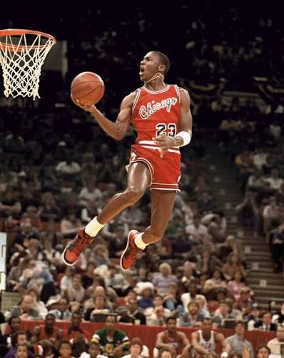
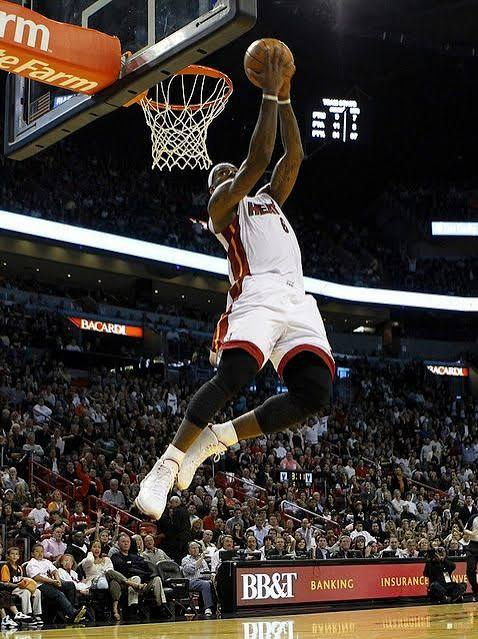
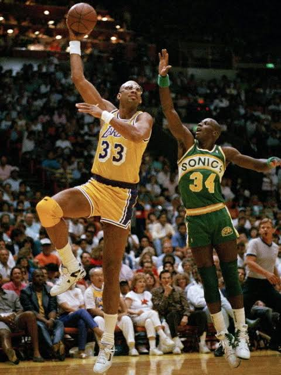

Top three basketball players of all time according to ESPN, and why:

-
Michael Jordan
- Highest average points per game in his best season, 30.1 points.
- Transformed the NBA into a worldwide phenomenon.
- Won 6 championships with 6 Finals MVPs.

- LeBron James
- Holds most points scored by any player. This is due to his skill and long career.
- Almost the highest in career assists and rebounds. He also won four championships.
- Played in the NBA finals ten times. Eight of those times were consecutive. He holds four Finals MVPs.

- Kareem Abdul-Jabbar
- Won six regular-season MVPs, more than any other player in history.
- Signature "skyhook" helped him become the leading scorer in NBA history for a long time.
- Took six NBA championship titles, and was selected to play in 19 All-Star games over a 20-year career.
Top Ten Plays by Lebron James: